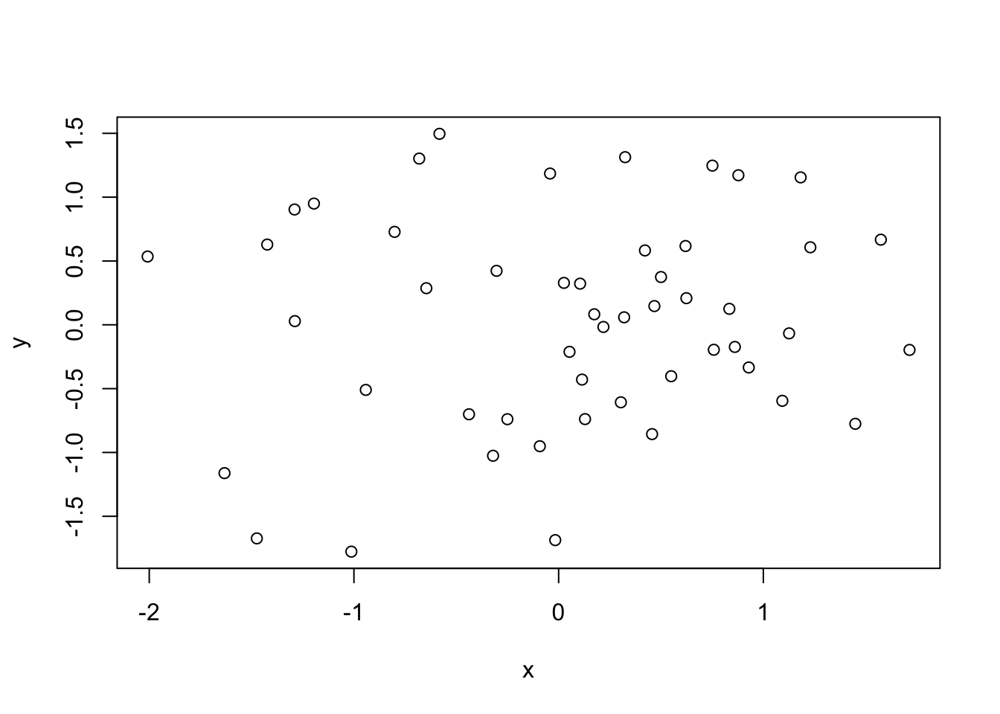
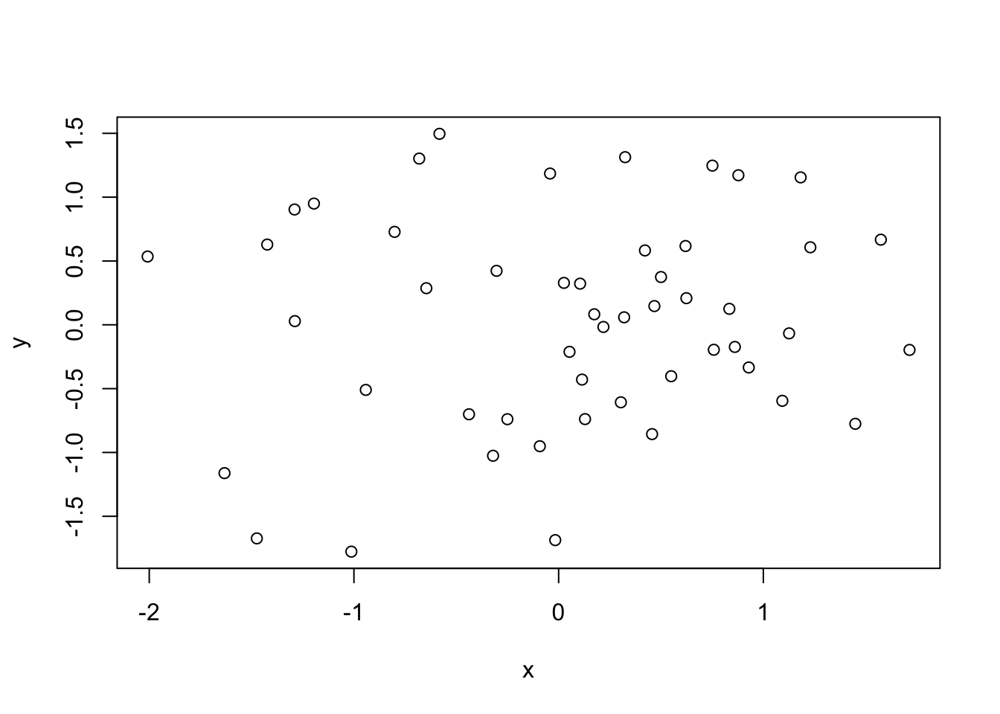

x <- rnorm(50)
y <- rnorm(x)
plot(x, y)
R 환경에서 할 수 있는 작업들을 빠르게 살펴 보자. (RStudio 실행)
다음 명령들을 콘솔(Comsole) 탭에 차례로 입력하면 간단한 그래프를 그려준다. (현 단계에서 그래프 출력 관련한 사용자 설정 방법은 무시)
x <- rnorm(50)
y <- rnorm(x)
plot(x, y)
위 명령의 결과로 생성된 객체 x, y 들을 환경(Environment) 탭에서 확인할 수 있다. 확인 후 다음 명령들을 실행해 보자.
ls()[1] "pandoc_dir" "quarto_bin_path" "x" "y" rm(x, y)R을 사용하여 간단한 선형회귀분석을 실행해 보자.
먼저 데이터 독립변수 x, 종속변수 y 로 이루어진 데이터프레임을 만들고,
x <- 1:20
w <- 1 + sqrt(x)/2
dummy <- data.frame(x = x, y = x + rnorm(x)*w)
dummy x y
1 1 -0.58454679
2 2 -0.06723254
3 3 3.44241509
4 4 1.84645042
5 5 7.83749839
6 6 7.09017115
7 7 5.58315458
8 8 8.55412084
9 9 11.23897118
10 10 10.56522953
11 11 13.17431021
12 12 10.31464504
13 13 15.97313753
14 14 16.45379566
15 15 12.87568593
16 16 20.69589927
17 17 17.00143330
18 18 14.54624635
19 19 20.45696146
20 20 26.33806012가중치 반영여부에 따른 회귀분석 결과를 비교해 보자.
fm <- lm(y ~ x, data = dummy)
summary(fm)
Call:
lm(formula = y ~ x, data = dummy)
Residuals:
Min 1Q Median 3Q Max
-5.252 -1.578 0.119 1.524 4.239
Coefficients:
Estimate Std. Error t value Pr(>|t|)
(Intercept) -0.91648 1.13632 -0.807 0.43
x 1.15079 0.09486 12.132 4.23e-10 ***
---
Signif. codes: 0 '***' 0.001 '**' 0.01 '*' 0.05 '.' 0.1 ' ' 1
Residual standard error: 2.446 on 18 degrees of freedom
Multiple R-squared: 0.891, Adjusted R-squared: 0.885
F-statistic: 147.2 on 1 and 18 DF, p-value: 4.232e-10fm1 <- lm(y ~ x, data = dummy, weight = 1/w^2)
summary(fm1)
Call:
lm(formula = y ~ x, data = dummy, weights = 1/w^2)
Weighted Residuals:
Min 1Q Median 3Q Max
-1.73769 -0.64885 0.07092 0.61337 1.48820
Coefficients:
Estimate Std. Error t value Pr(>|t|)
(Intercept) -1.19330 0.81161 -1.47 0.159
x 1.17575 0.08276 14.21 3.19e-11 ***
---
Signif. codes: 0 '***' 0.001 '**' 0.01 '*' 0.05 '.' 0.1 ' ' 1
Residual standard error: 0.8969 on 18 degrees of freedom
Multiple R-squared: 0.9181, Adjusted R-squared: 0.9136
F-statistic: 201.8 on 1 and 18 DF, p-value: 3.187e-11